frysk Images
Last updated 2005-12-05.
Below is a work-in-progress snapshot of a process view.
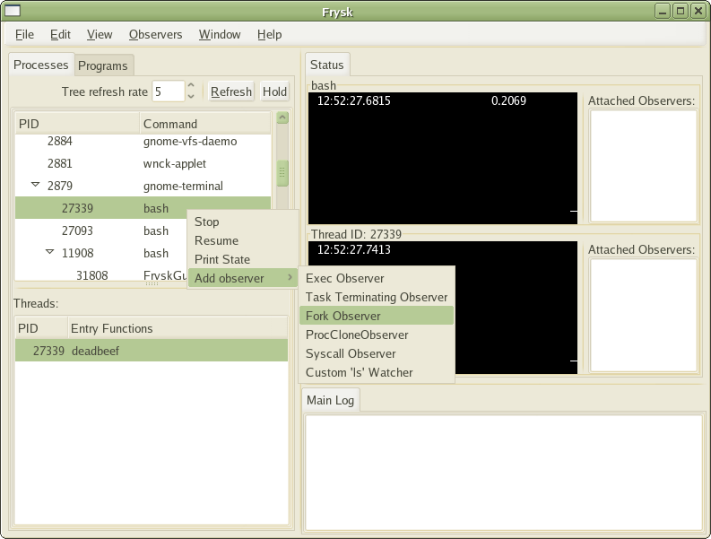
Next is a screenshot of the same window, after the observer on fork()
has been set.
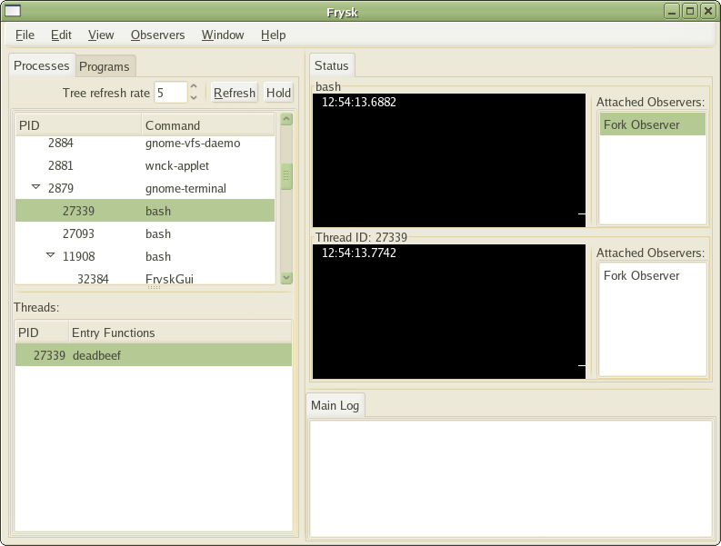
Below is the result of monitoring the process with the fork observer set.
There was a fork event, as displayed in the timeline window.
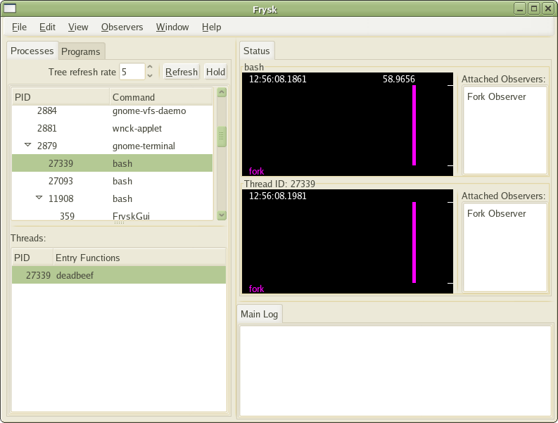
Next is how the timeline window displays multiple events triggerred
when multiple observers have been set (here, the events were
hardcoded, obviously).
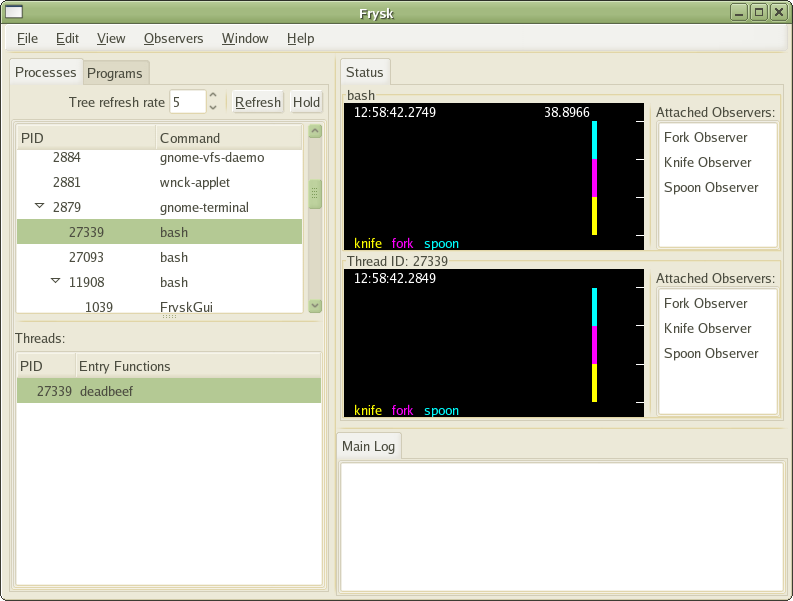
Below is how to navigate to the source window from the process monitor window.
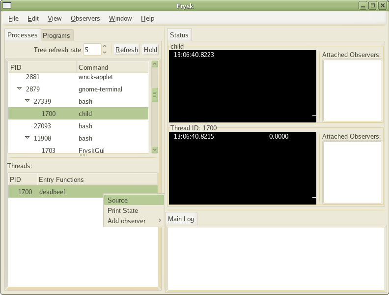
Next is a partial mockup (some parts were taken from a snapshot) of
the source view window. On the left hand side is the stack and variable trace
, and in
the middle the corresponding source.
Below, is a text search run in the source window.
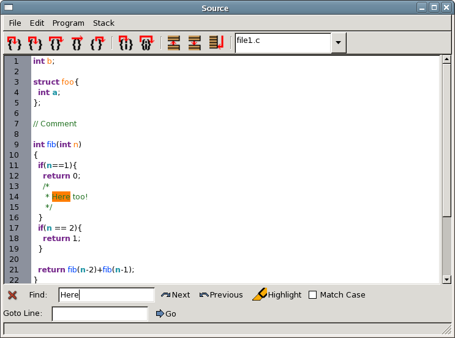
Here, a sequnce of screenshots that display how, given inline code (here do_something(), b(), and f() were inlined),
the source window can display it in place.
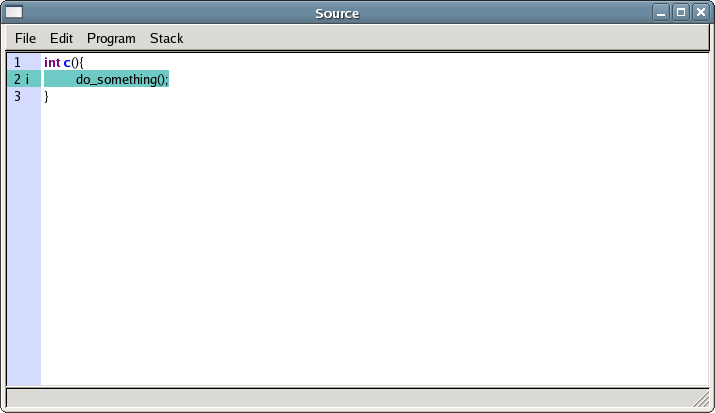
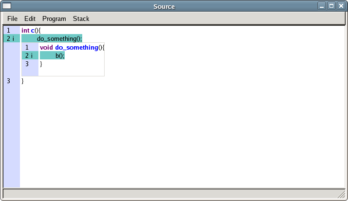
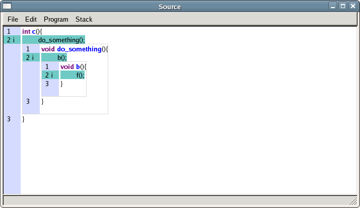
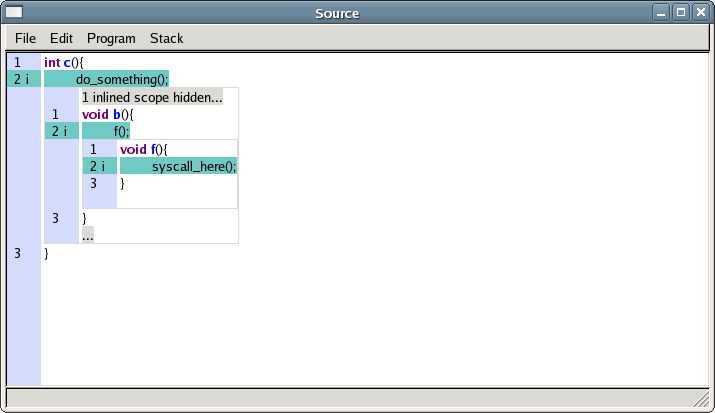
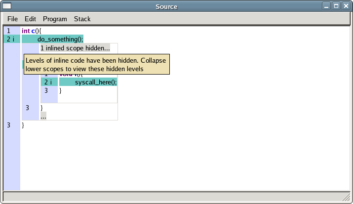
Next is a shot of the Register Window, available from the Source Window
listing the contents of various registers used by program under examination.
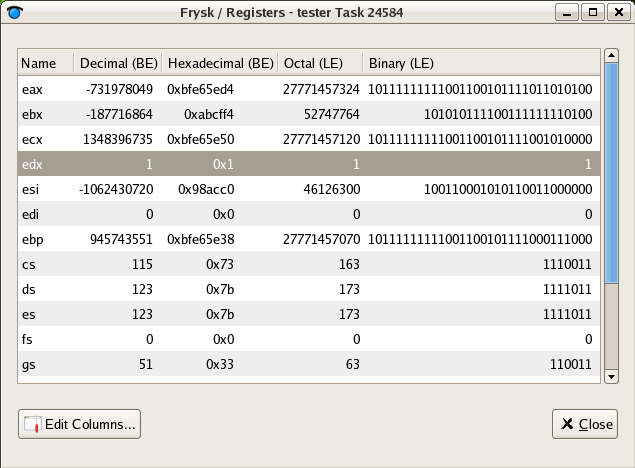
And here is a screenshot of the Memory Window, displaying the contents of
program memory between user-selected bounds in a variety of formats, including
instruction reading.
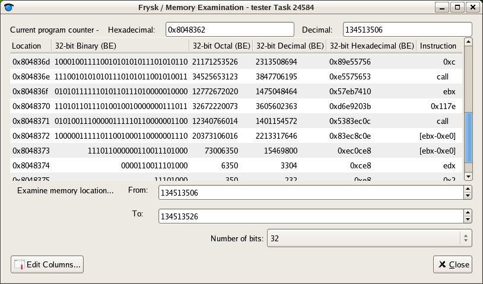
prompt to kill when one
exceeds more than 5 minutes of cpu
prompt for
the source browser when the program eclipse is started.